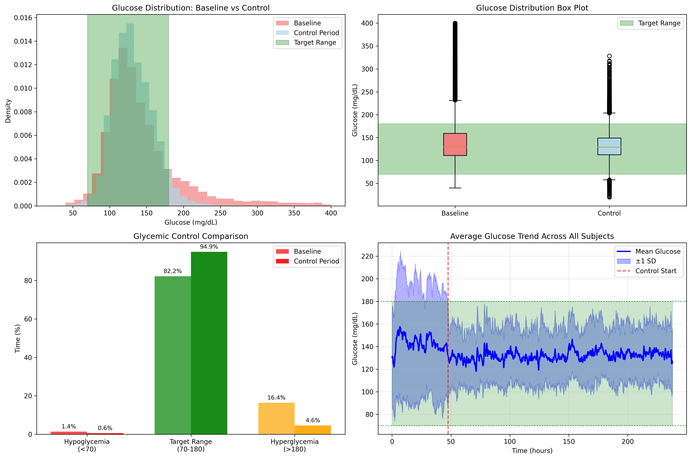
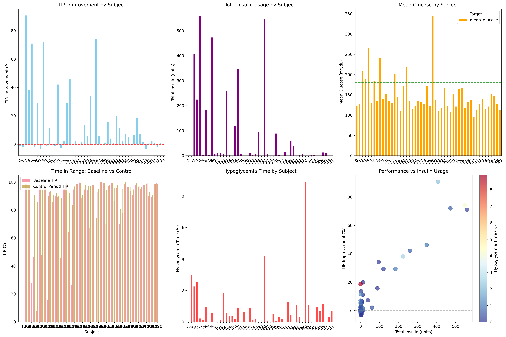
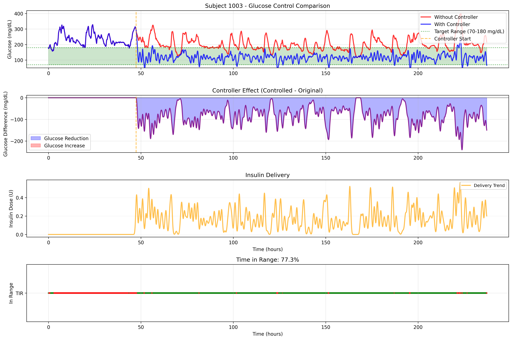
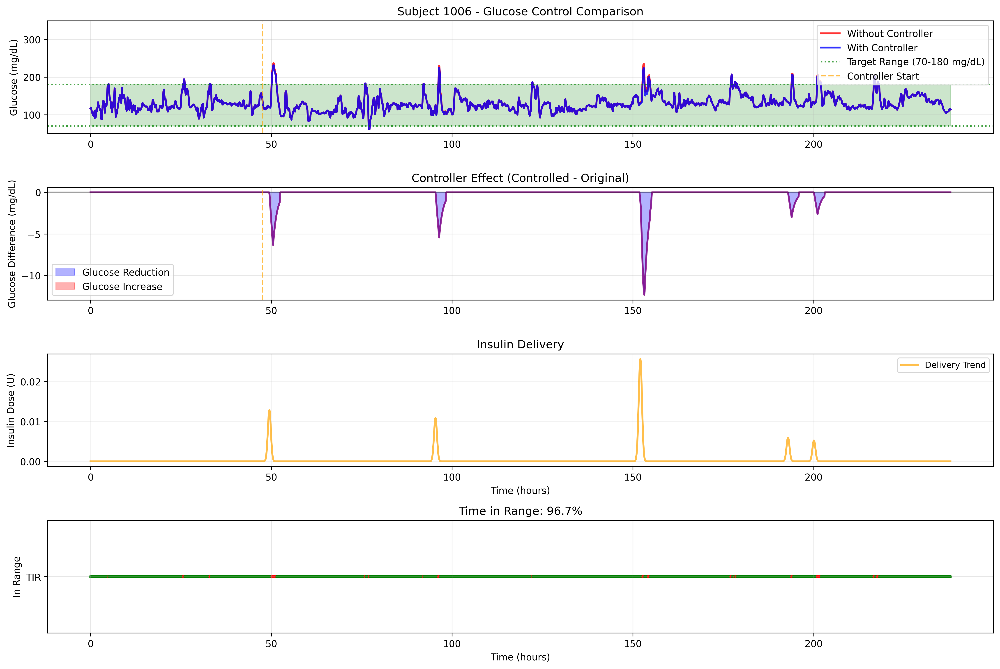
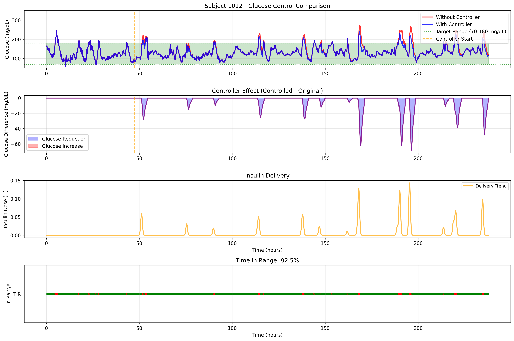

Automated insulin delivery and meal detection algorithms based on continuous glucose monitoring (CGM) time-series data.

Meal Detection Summary

Glucose Distribution Analysis

Controller Summary Statistics
Individual CGM and Automated Insulin Delivery Traces



